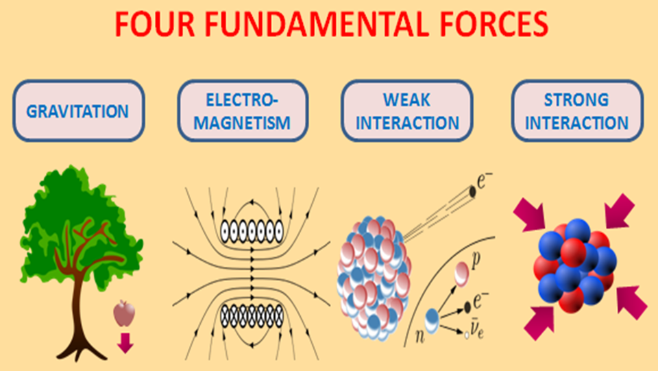
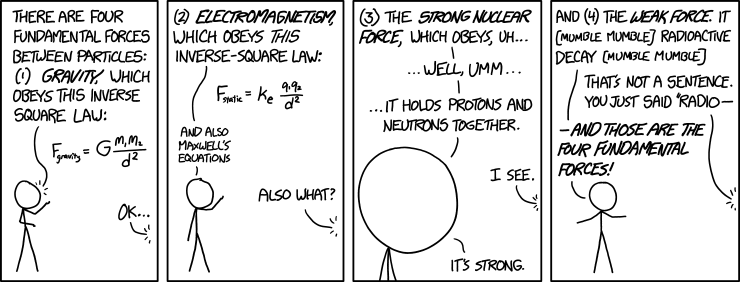

By Raghava Kalidindi

The four fundamental forces are the things that govern out universe. No, these are not like your every "Push and Pull". They are each carried out by a subatomic particle known as the boson. These forces theoretically existed since the big bang, and were responsible for the Universe being the way it is today. Here is a table of each force in order from weakest to strongest, and the boson that causes them:
| Force | Power | Boson |
|---|---|---|
| Gravity | 100 * Gravity | Graviton? |
| The Weak Force | 1025 * Gravity | W+ Boson, W- Boson, Z Boson |
| Electromagnetism | 1036 * Gravity | Photon |
| The Strong Force | 1038 * Gravity | Gluon |
Believe it or not, Gravity is the weakest of the four fundamental forces. This might make you worry about the strength of the other forces since gravity is already strong enough to pull entire planets together, but don't worry, it isn't that bad. Gravity isn't actually strong, it is just abundant. The force of gravity uses the following formula: Fg = (G*m1*m2)/r2 where Fg is the force of gravity, m1 and m2 are the masses of the two objects, r is the distance between the two objects, and G is the gravitational constant, at about 6.67408*10-11 m3kg-1s-2. This formula essentially sums up Newton's three laws of gravitation:
Since our everyday objects don't have enough mass, we don't feel their gravity, but it is still there. We are currently being pulled on by the the gravity of a star halfway across the univers, but it is just too weak for us to realize. Gravity may span indefinitely, but its strength is technically nothing compared to the other forces. We have yet to find the theoretical graviton that supposedly carries the force of gravity, and we would be one step closer to solving the universe's puzzles if we do.
Though it may not be the weakest as the name suggests, it is still not as powerful as the other forces. Also known as The Weak Force or The Weak Interaction, it is responsible for beta decay. Beta decay occurs when either the neutron in the atom transforms into a proton or vice-versa. When an atom has more neutrons than is stable, then the neutron turns into a proton and releases an electron and a positron neutrino in the form of the W boson. To turn from a proton to a neutron, it releases a positron and an electron neutrino. These particles are what we feel as radiation. It is the most complicated of the four fundamental forces to understand, but also one of the most crucial.
This is another force you are probably familiar with. Electromagnetism is a fairly basic force in concept, but quite complicated in actuality. Everything has a property known as charge, including subatomic particles. Its charge can be any rational number, 0 meaning no charge. You probably already know this, but opposite charges attract and like charges repel each other, i.e. if they both have the same sign, they repel and if they have a different sign, they attract. This is known as Coulomb's law. Named after the physicist Charles-Augustin de Coulomb, Coulomb's law follows the following equation: F = (k*q1*q2)/d2. In it, F represents the electromagnetic force, q1 and q2 represent the charges of the two objects, d represents the distance between the two objects, and k represents Coulomb's constant, being approximately 9.0*109 Nm2C-2. The result shows the repelling force applied. Therefore, if the answer is positive, the two will repel each other; if the answer is negative, they will attract. Note the similarity between this equation and the one for gravity. This is because unlike the weak and strong interactions, these two forces span indefinitely. Despite this, electromagnetism also follows what are known as Maxwell's equations. You can find more information on those in this site.
The name is no misnomer, The Strong Force is the most powerful of the four fundamental forces. Also called the Strong Force or the Strong Interaction, it holds together the quarks in protons and neutrons and works based on the "colour" charge. There are three colours: red, green, and blue. Each colour has an anti-colour: cyan, magenta, and yellow respectively. Each gluon is a pair of a colour and a random anti-colour. For example, there could be a red-yellow gluon or a blue-magenta gluon. In a proton or neutron, the three quarks are each one of three colours. For example, a blue quark would emit either a blue-cyan, blue-magenta, or a blue-yellow gluon. It then turs into the colour of the anti-colour it emitted. So if it emitted a blue-magenta gluon, it would turn into a green quark. Then, the actual green quark would absorb the gluon and turn blue. If the gluon were a red-magenta instead of a blue-magenta, it would have turned red. Three gluons - red-cyan, green-magenta, and blue-yellow - are a colour and its anti-colour and therefore cancel each other out. They change the colour of neither the quark responsible for emission nor the quark that absorbs it. These constant interactions only take place in the subatomic level, but are responsible for holding together the universe.
Want to read again?